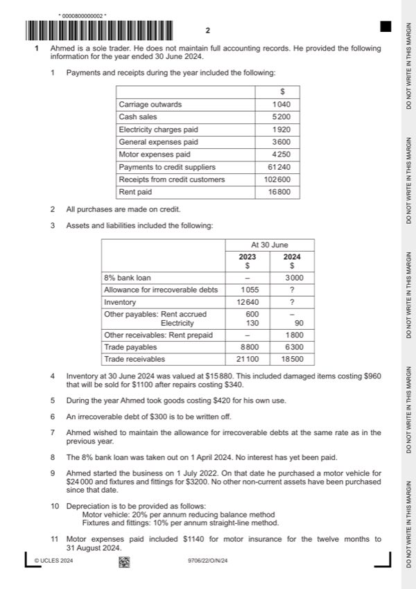

Question 1

Original paper page 2
Part 1(a) — solution
Prepare the statement of profit or loss for the year ended 30 June 2024. 17
Ahmed
Statement of profit or loss for the year ended 30 June 2024
$ $
Revenue W1 105 200 (3)OF
Cost of sales
Opening inventory 12 640
Purchases W2 58 740 (1)
Goods for own use (420) (1)
Mark points
- Include the ideas shown in the solution above.
Part 1(a) — solution
- W1 – Revenue (102 600 – 21 100 + 18 500) (1) + 5 200 (1) = $105 200 (1)OF
- W2 – Purchases (61 240 + 6 300 – 8 800) = $58 740 (1)
- W3 – Closing inventory 15 880 – (960 – 760) = $15 680 (1)
- W4 – Allowance for 18 500 – 300 = 18 200 5% = 910 – 1055 = $(145) (1)
- W5 – Rent 16 800 – 600 – 1800 = $14 400 (1)
- W6 – Electricity 1 920 – 130 + 90 = $1 880 (1)
- W7 – Motor expenses 4 250 – 190 = $4 060 (1)
- W8 – Bank interest 3 000 8% = 240 3/12 = $60 (1)
- W9 – Depreciation 24 000 – 4 800 = 19 200 20% = 3 840 + 3 200 10% = $4 160 (1)
Mark points
- W1 – Revenue (102 600 – 21 100 + 18 500) (1) + 5 200 (1) = $105 200 (1)OF
- W2 – Purchases (61 240 + 6 300 – 8 800) = $58 740 (1)
- W3 – Closing inventory 15 880 – (960 – 760) = $15 680 (1)
- W4 – Allowance for 18 500 – 300 = 18 200 5% = 910 – 1055 = $(145) (1)
- W5 – Rent 16 800 – 600 – 1800 = $14 400 (1)
- W6 – Electricity 1 920 – 130 + 90 = $1 880 (1)
- W7 – Motor expenses 4 250 – 190 = $4 060 (1)
- W8 – Bank interest 3 000 8% = 240 3/12 = $60 (1)
- W9 – Depreciation 24 000 – 4 800 = 19 200 20% = 3 840 + 3 200 10% = $4 160 (1)
Part 1(b) — solution
Explain, with reference to an accounting concept, why adjustments were to be made to the financial statements in 6
respect of these items.
Item
Mark points
- Include the ideas shown in the solution above.
Part 1(c) — solution
- Interest payments would reduce profits for the next ten years. (1)
- Would the bank agree to providing further loan capital? (1)
- Would the new premises result in the necessary increase in turnover? (1)
- Would the bank require security? (1)
- Will provide necessary capital to avoid long-term liability. (1)
- Would have to forgo half of future profits. (1)
- Will Ahmed’s brother add any additional skills/knowledge to the business? (1)
- Will the partnership cause friction between the brothers? (1)
Mark points
- Interest payments would reduce profits for the next ten years. (1)
- Would the bank agree to providing further loan capital? (1)
- Would the new premises result in the necessary increase in turnover? (1)
- Would the bank require security? (1)
- Will provide necessary capital to avoid long-term liability. (1)
- Would have to forgo half of future profits. (1)
- Will Ahmed’s brother add any additional skills/knowledge to the business? (1)
- Will the partnership cause friction between the brothers? (1)